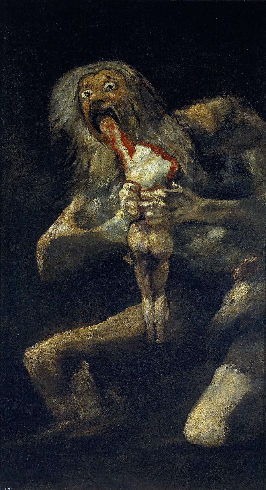
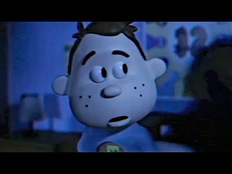

Ces illustrations s’inscrivent dans une recherche à la fois visuelle et théorique. Celle-ci portait sur les différentes utilisations du dessin, du trait et de la couleur susceptibles de provoquer un sentiment de malaise. Pour certaines images, j’ai poursuivi l’exploration de la manière de photographier la peinture que j'avais commencé dans ce projet-ci.
Référence(s)

Francisco Goya, Saturne dévorant un de ses fils 1819-1823 Cette peinture de Francisco Goya, >Saturne dévorant un de ses enfants, m’a inspiré par ses contrastes et ses traits « rugueux », qui renforcent l’aspect dramatique. Les yeux écarquillés et blancs de Saturne, à la fois vides et fous, m’ont particulièrement marqué et ont influencé ma manière de représenter le regard dans certaines de mes productions.

Braiden Ortiz, The kid and the camera, 2022 The Kid and the Camera est un court métrage en 3D qui raconte l’histoire d’un enfant se liant d’amitié avec une créature qui finit par le tuer. Le décalage entre le ton de la vidéo (décors enfantins et narration enjouée) et les événements qu’elle relate crée un sentiment de malaise de manière très efficace.